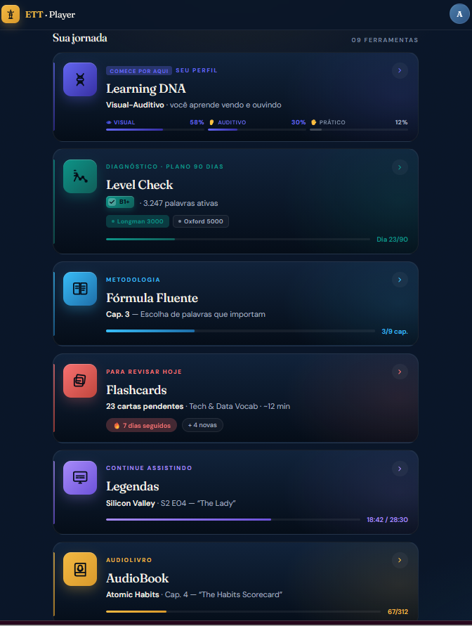

Do Software
aos Dados
Como construir uma carreira internacional em tecnologia
O que você vai levar desta palestra
O dia a dia de um engenheiro de software
O dia a dia de um engenheiro de dados
Como construir uma trajetória técnica forte
Como se posicionar para o mercado internacional
Inglês, IA, LinkedIn, currículo e entrevistas a seu favor
Software → Mobile → Sistemas Distribuídos → Big Data → Cloud → Dados & IA → Comunidade
Uma carreira em tecnologia não é uma linha reta. É uma sequência de ciclos de aprendizado.
Antes de ser engenheiro de dados, eu fui engenheiro de software
- Código ensina lógica, disciplina e depuração
- Sistemas ensinam arquitetura, manutenção e entrega
- Projetos reais ensinam prazo, cliente e responsabilidade
- Fundamentos seguem úteis quando as ferramentas mudam
A fase mobile e arquitetura de software
- Android, iOS, Xamarin, C#, Java e .NET
- Aplicações corporativas e produtos digitais
- Testes, arquitetura, integração e publicação em lojas
- Treinamento de times e liderança técnica
Comunidade acelera carreira
Quando os problemas ficaram grandes demais para uma aplicação tradicional
- Hadoop, HDFS, MapReduce e Mahout
- Recomendação de produtos em larga escala
- Sistemas distribuídos
- Processamento batch
- Machine learning em ambientes distribuídos
O que faz um Engenheiro de Software?
- Entende requisitos
- Desenvolve funcionalidades
- Cria APIs e integrações
- Corrige bugs
- Escreve testes
- Faz deploy
- Monitora aplicações
- Atua com produto, UX e infra
O que faz um Engenheiro de Dados?
- Cria pipelines
- Extrai, transforma e entrega dados
- Modela bases analíticas
- Cuida de qualidade e confiabilidade
- Otimiza performance e custo
- Integra dados com BI, IA e produtos
Duas áreas diferentes, mas conectadas
Software Engineer
- Produto
- Aplicação
- APIs
- Usuário final
- Funcionalidade
- Experiência
Data Engineer
- Plataforma
- Pipeline
- Dados
- BI / IA / Analytics
- Confiabilidade
- Escala
Aprender tecnologia não é decorar ferramenta
Ferramentas mudam. Fundamentos ficam.
Quem só estuda fica invisível
- Organize seu GitHub
- Publique pequenos projetos
- Escreva posts simples
- Participe de eventos
- Faça perguntas
- Compartilhe aprendizados
- Conte os bastidores da sua evolução
Por que pensar no mercado internacional?
- Tecnologia é um mercado global
- O trabalho remoto abriu portas
- Empresas buscam talentos em vários países
- O Brasil tem bons profissionais técnicos
- Inglês e posicionamento destravam oportunidades
Você não precisa falar como nativo. Precisa se comunicar.
- Apresentar sua trajetória
- Explicar um projeto
- Participar de reuniões
- Fazer entrevistas
- Escrever mensagens profissionais
- Ler documentação
- Fazer networking
ETT — destrave o inglês para a carreira global
Um ecossistema de aceleração de inglês — não é um curso — para profissionais de Tecnologia, Dados, IA e BI — de "entendo, mas travo" ao inglês funcional.
Um ecossistema completo
- Comunidade, constância e comprometimento
- Base estruturada e nivelamento (A0 → B1)
- Conversação guiada: role-play e storytelling
- Imersão intensiva no Brasil e nos EUA
- Empregabilidade internacional (Coders)
- 10 ferramentas com IA e personalização
Treine inglês com situações reais
Ferramentas de IA que deixam seu estudo eficiente.
- Tell me about yourself
- Explain a technical project
- Describe a challenge you solved

Currículo forte conta impacto
"Trabalhei com Hadoop, Spark, Python e SQL."
"Modernizei pipelines de dados em ambiente Hadoop/Spark."
"Liderei a modernização de uma plataforma de dados de grande escala, reduzindo custos, melhorando performance e garantindo continuidade dos dashboards executivos."
Do meu currículo de 2024 ao de 2026
- Parede de tecnologias e "About me" genérico
- Experiência em 1ª pessoa, sem métricas
- Foto, data de nascimento e até OS/2 e Win 3.1
- Resumo com impacto quantificado no topo
- Verbos de ação + métricas em cada cargo
- Posicionamento claro, LinkedIn e Skills tags (ATS)
O mesmo trabalho, dois currículos
O que mudou — e por que funciona
LinkedIn não é currículo online. É posicionamento.
- Headline clara
- Sobre com narrativa profissional
- Experiências com métricas
- Projetos em destaque
- Conteúdo recorrente
- Comentários estratégicos
- Networking com recrutadores
- Consistência de mensagem
Em 3 segundos, o mercado entende o que você é?
- Título duplo: arquiteto e desenvolvedor — dois papéis, nenhum nicho
- Abre como "software engineer", diluindo a especialidade em dados
- Foto, data de nascimento e inglês "intermediate" enfraquecem a percepção sênior
- Um título de mercado, claro e pesquisável
- A 1ª linha já entrega nicho + senioridade + stack
- Proposta de valor mensurável e presença internacional (LinkedIn, inglês pleno)
Como posicionar seu perfil no LinkedIn
Headline com valor
Vá além do cargo: nicho + stack + impacto, não só "Data Engineer".
Foto e banner
Foto profissional nítida e banner com o seu tema de atuação.
"Sobre" com narrativa
1ª pessoa, com impacto medido e palavras-chave do mercado.
Destaques (Featured)
Fixe projetos, talks, artigos e cases que provam o que você diz.
Experiência em STAR
Cada cargo com ação + resultado, não só lista de tarefas.
Palavras-chave (SEO)
Use os termos que o recrutador busca — é assim que ele te acha.
Skills & recomendações
Top skills alinhadas à vaga-alvo + recomendações de colegas e líderes.
Atividade consistente
Poste, comente e marque presença — perfil vivo ranqueia melhor.
STAR: transforme experiência em história de impacto
Situação
Qual era o contexto?
Tarefa
Qual era o desafio?
Ação
O que você fez?
Resultado
Qual foi o impacto?
Use STAR no currículo, LinkedIn, entrevistas, posts e apresentação pessoal.
STAR aplicado a uma experiência do meu currículo
Built and scaled an early Hadoop-based recommendation platform supporting high-volume Brazilian e-commerce traffic, laying the foundation for large-scale data processing and analytics. Designed and deployed the Hadoop cluster (compiled from source in the pre-distribution era), enabling scalable batch processing for large recommendation workloads.
Situação
Buscapé, com alto volume de tráfego de e-commerce, numa era anterior às distribuições Hadoop prontas.
Tarefa
Construir uma plataforma de recomendação em larga escala — e o cluster que a sustentasse.
Ação
Projetou e implantou o cluster Hadoop compilado do código-fonte, com Mahout e MapReduce em Java.
Resultado
Recomendação suportando grande parte do e-commerce brasileiro e a base para dados em larga escala.
Transforme sua experiência em STAR
Entrevista também se treina
- Comportamental
- Técnica
- Em inglês
- Explicação de projeto
- Conflitos e desafios
- Negociação de salário
- Trabalho remoto
Perguntas para praticar
- Tell me about yourself.
- Describe a challenging project.
- How do you learn a new technology?
- Why do you want to work internationally?
Monte seu pitch de 3 minutos
Quem você é hoje
Posicionamento atual em uma frase: cargo + especialidade.
"I'm a Senior Data Engineer specialized in Big Data platforms and cloud migration."
Sua trajetória
De onde veio: 1 ou 2 marcos que explicam sua evolução.
"Over 20 years in software and 10+ in data — from mobile to Hadoop, cloud and lakehouse."
Sua prova (STAR)
Um case com resultado medido — o ponto alto do pitch.
"I led a ~100 TB Data Lake migration with zero downtime and 40% lower cost."
Para onde quer ir
Seu objetivo + um fechamento que abre a conversa.
"Now I'm looking to work with global teams solving data challenges at scale."
A IA mudou a forma de estudar e trabalhar
- Explicar conceitos
- Revisar código
- Simular entrevistas
- Melhorar currículo
- Praticar inglês
- Criar plano de estudos
- Comparar tecnologias
- Acelerar protótipos
Use IA como treinador, não como muleta
Peça explicações em níveis diferentes
Peça exemplos e exercícios
Peça revisão de código
Peça simulação de entrevista
Peça correção do inglês
Transforme um projeto em STAR
Identifique lacunas no currículo
Sempre teste, valide e entenda
O mercado procura quem entrega resultado
Seu plano para os próximos 30 dias
Semana 1
- Atualizar LinkedIn
- Revisar currículo
- Escrever apresentação pessoal
Semana 2
- Organizar GitHub
- Publicar um post técnico
- Treinar "Tell me about yourself"
Semana 3
- Fazer mock interview
- Aplicar STAR em 3 experiências
- Participar de uma comunidade
Semana 4
- Aplicar para vagas
- Conversar com recrutadores
- Ajustar posicionamento
Carreira internacional começa antes da vaga
Você não precisa esperar estar pronto para começar. Comece pequeno, mas comece com consistência.
Carreira internacional não começa quando você recebe a vaga. Ela começa quando você decide se preparar para ser encontrado.